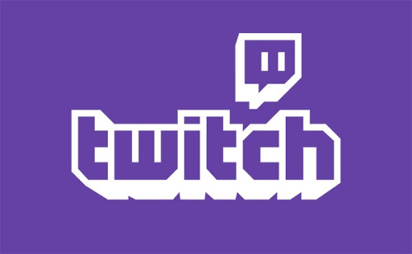

Twitch
트위치(Twitch)는 비디오 게임 전용 인터넷 개인 방송 서비스이다. 미국 샌프란시스코를 본사로 두고 있으며 2011년 6월 6일부터 시작되었다. 2014년 7월 25일에는 구글이 약 10억 달러(한화 1조 200억원)에 인수를 검토 중이라고 보도되었으나 8월 25일 아마존닷컴이 9억 7,000만 달러를 모두 현금으로 지불하여 인수하였다. 동영상 스트리밍 서비스에서 가장 인기 높은 콘텐츠 분야는 단연 비디오 게임이다. 게이머가 자신이 게임을 하는 영상을 생중계하고, 다른 이가 그것을 시청하며 댓글 등으로 방송에 적극적으로 참여하는 모습은 여타 콘텐츠들에 비해 높은 몰입감을 줬다. 본인의 게임 실력과는 관계없이 해당 게임을 속속들이 즐길 수도 있고, 혼자가 아니라 다함께 즐기고 있는 느낌을 주기 때문이다. 이렇게 게임 중계방송은 청소년과 젊은층 사이에 하나의 문화로 자리 잡았다. 만 14세 이상만이 가입이 가능하다.
